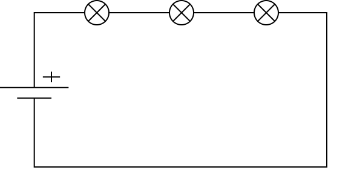
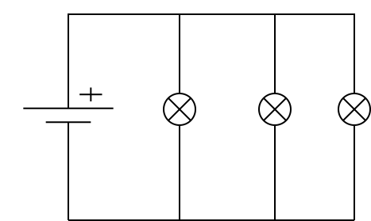
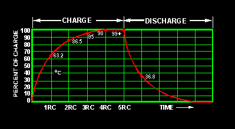

Neurons for Computer Geeks - Part IV: More Electricity
Saturday, September 05, 2015
Part I of this series looked at a neuron from above; Part II attempted to give us the fundamental building blocks in electricity required to get us on the road to modeling neurons. We did a quick interlude with a bit of coding in part III but now, sadly, we must return to boring theory once more.
Now that we grok the basics of electricity, we need to turn our attention to the RC circuit. As we shall see, this circuit is of particular interest when modeling neurons. The RC circuit is so called because it is a circuit, and it is composed of a Resistor and a Capacitor. We've already got some vague understanding of circuits and resistors, so lets start by having a look at this new crazy critter, the capacitor.
Capacitors
Just like the battery is a source of current, one can think of the capacitor as a temporary store of current. If you plug a capacitor into a circuit with just a battery, it will start to "accumulate" charge over time, up to a "maximum limit". But how exactly does this process work?
In simple terms, the capacitor is made up of two metal plates, one of which will connect to the positive end of the battery and another which connects to the negative end. At the positive end, the metal plate will start to lose negative charges because these are attracted to the positive end of the battery. This will make this metal plate positively charged. Similarly, at the negative end, the plate will start to accumulate negative charges. This happens because the electrons are repelled by the negative end of the battery. Whilst this process is taking place, the capacitor is charging.
At some point, the process reaches a kind of equilibrium, whereby the
electrons in the positively charged plate are attracted equally to the
plate as they are to the positive end of the battery, and thus stop
flowing. At this point we say the capacitor is charged. It is
interesting to note that both plates of the capacitor end up with the
same "total" charge but different signs (i.e. -q and +q).
Capacitance
We mentioned a "maximum limit". A few things control this limit: how big the plates are, how much space there is between them and the kind of material we place between them, if any. The bigger the plates and the closer they are - without touching - the more you can store in the capacitor. The material used for the plates is, of course, of great importance too - it must be some kind of metal good at conducting.
In a more technical language, this notion of a limit is captured by the concept of capacitance, and is given by the following formula:
\[ C = \frac{q}{V} \]
Lets break it down to its components to see what the formula is trying
to tell us. The role of V is to inform us about the potential
difference between the two plates. This much is easy to grasp; since
one plate is positively charged and other negatively charged, it is
therefore straightforward to imagine that a charge will have a
different electric potential in each plate, and thus that there will
be an electric potential difference between them. q tells us about
the magnitude of the charges that we placed on the plates -
i.e. ignoring the sign. It wouldn't be to great a leap to conceive
that plates with a larger surface area would probably have more
"space" for charges and so a larger q - and vice-versa.
Capacitance is then the ratio between these two things; a measure of how much electric charge one can store for a given potential difference. It may not be very obvious from this formula, but capacitance is constant. That is to say, a given capacitor has a capacitance, influenced by the properties described above. This formula does not describe the discharging or charging process - but of course, capacitance is used in the formulas that describe those.
Capacitance is measured in SI units of Farads, denoted by the letter
F. A farad is 1 coulomb over 1 volt:
\[ 1F = \frac{C}{V} \]
Capacitors and Current
After charging a capacitor, one may be tempted to discharge it. For that one could construct a simple circuit with just the capacitor. Once the circuit is closed, the negative charges will start to flow to the positively charged plate, at full speed - minus the resistance of the material. Soon enough both plates would be made neutral. At first glance, this may appear to be very similar to our previous circuit with a battery. However, there is one crucial difference: the battery circuit had a constant voltage and a constant current (for a theoretical battery) whereas a circuit with a discharging capacitor has voltage and current that decay over time. By "decaying", all we really mean is that we start at some arbitrarily high value and we move towards zero over a period of time. This makes intuitive sense: you cannot discharge the capacitor forever; and, as you discharge it, the voltage starts to decrease - for there are less charges in the plates and so less potential difference - and similarly, so does the current - for there is less "pressure" to make the charges flow.
This intuition is formally captured by the following equation:
\[ I(t) = C\frac{dV(t)}{dt} \]
I'm rather afraid that, at this juncture, we have no choice but to introduce Calculus. A proper explanation of Calculus a tad outside the remit of these posts, so instead we will have to make do with some common-sense but extremely hand-waved interpretations of the ideas behind it. If you are interested in a light-hearted but still comprehensive treatment of the subject, perhaps A Gentle Introduction To Learning Calculus may be to your liking.
Let's start by taking a slightly different representation of the formula above and then compare these two formulas.
\[ i = C\frac{dv}{dt} \]
In the first case we are talking about the current I, which normally
is some kind of average current over some unspecified period. Up to
now, time didn't really matter - so we got away with just talking
about I in these general terms. This was the case with the Ohm's Law
in part II. However, as we've seen, it is not so with capacitors - so
we need to make the current specific to a point in time. For that we
supply an "argument" to I - I(t); here, a mathematician would say
that that I is a function of time. In the second case, we make use
of i, which is the instantaneous current through the capacitor. The
idea is that, somehow, we are able to know - for any point in time -
what the instantaneous current is.
How we achieve that is via the magic of Calculus. The expression
\(\frac{dv}{dt}\) in the second formula provides us with the
instantaneous rate of change of the voltage over time. The same notion
can be applied to V, as per first formula.
These formulae may sound awfully complicated, but what they are trying to tell us is that the capacitor's current has the following properties:
- it varies as a "function" of time; that is to say, different time points have different currents. Well, that's pretty consistent with our simplistic notion of a decaying current.
- it is "scaled" by the capacitor's capacitance
C; "bigger" capacitors can hold on to higher currents for longer when compared to "smaller" capacitors. - the change in electric potential difference varies as a function of time. This is subtle but also makes sense: we imagined some kind of decay for our voltage, but there was nothing to say the decay would remain constant until we reached zero. This formula tells us it does not; voltage may decrease faster or slower at different points in time.
Circuits: Parallel and Series
The RC circuit can appear in a parallel or series form, so its a good time to introduce these concepts. One way we can connect circuits is in series; that is, all components are connected along a single path, such that the current flows through all of them, one after the other. If any component fails, the flow will cease.
This is best understood by way of example. Lets imagine the canonical
example of a battery - our old friend the 1.5V AA battery - and a
three small light bulbs. A circuit that connects them in series would
be made up of a cable segment plugged onto one of the battery's
terminals - say +, then connected to the first light bulb. A second
cable segment would then connect this light bulb to another light
bulb, followed by another segment and another light bulb. Finally, a
cable segment would connect the light build to the other battery
terminal - say -. Graphically - and pardoning my inability to use
Dia to create circuit diagrams - it would look more or less like this:

This circuit has a few interesting properties. First, if any of the light bulbs fail, all of them will stop working because the circuit is no longer closed. Second, if one were to add more and more light bulbs, the brightness of each light bulb will start to decrease. This is because each light bulb is in effect a resistor - the light shining being a byproduct of said resistance - and so they are each decreasing the current. So it is that in a series circuit the total resistance is given by the sum of all individual resistances, and the current is the same for all elements.
Parallel circuits are a bit different. The idea is that two or more components are connected to the circuit in parallel, i.e. there are two or more paths along which the current can flow at the same time. So we'd have to modify our example to have a path to each of the light bulbs which exists in parallel to the main path - quite literally a segment of cable that connects the other segments of cable, more or less like so:

Here you can see that if a bulb fails, there is still a closed loop in which current can flow, so the other bulbs should be unaffected. This also means that the voltage is the same for all components in the circuit. Current and resistance are now "relative" to each component, and it is possible to compute the overall current for the circuit via Kirchhoff's Current Law. Simplifying it, it means that the current for the circuit is the sum of all currents flowing through each component.
This will become significant later on when we finally return to the world of neurons.
The RC Circuit
With all of this we can now move to the RC circuit. In its simplest form, the circuit has a source of current with a resistor and a capacitor:
Figure 3: Source: Wikipedia, RC circuit
Let's try to understand how the capacitor's voltage will behave over time. This circuit is rather similar to the one we analysed when discussing capacitance, with the exception that we now have a resistor as well. But in order to understand this, we must return to Kirchhoff's current law, which we hand-waved a few paragraphs ago. Wikipedia tells us that:
The algebraic sum of currents in a network of conductors meeting at a point is zero.
One way to understand this statement is to think that the total quantity of current entering a junction point must be identical to the total quantity leaving that junction point. If we consider entering to be positive and leaving to be negative, that means that adding the two together must yield zero.
Because of Kirchhoff's law, we can state that, for the positive terminal of the capacitor:
\[ i_c(t) + i_r(t) =0 \]
That is: at any particular point in time t, the current flowing
through the capacitor added to the current flowing through the
resistor must sum to zero. However, we can now make use of the
previous formulas; after all, our section on capacitance taught us
that:
\[ i_c(t) = C\frac{dv(t)}{dt} \]
And making use of Ohm's Law we can also say that:
\[ i_r(t) = \frac{v(t)}{R} \]
So we can expand the original formula to:
\[ C\frac{dv(t)}{dt} + \frac{v(t)}{R} \]
Or:
\[ C\frac{dV}{dt} + \frac{V}{R} \]
I'm not actually going to follow the remaining steps to compute V,
but you can see them here and they are fairly straighforward, or at
least as straightforward as calculus gets. The key point is, when you
solve the differential equation for V, you get:
\[ V(t) = V_0e^{\frac{−t}{RC}} \]
With \(V_0\) being voltage when time is zero. This is called the circuit's natural response. This equation is very important. Note that we are now able to describe the behaviour of voltage over time with just a few inputs: the starting voltage, the time, the resistance and the capacitance.
A second thing falls off of this equation: the RC Time constant, or
τ. It is given by:
\[ τ = RC \]
The Time Constant is described in a very useful way in this page, so I'll just quote them and their chart here:
The time required to charge a capacitor to 63 percent (actually 63.2 percent) of full charge or to discharge it to 37 percent (actually 36.8 percent) of its initial voltage is known as the TIME CONSTANT (TC) of the circuit.

What next?
Now we understand the basic behaviour of the RC Circuit, together with a vague understanding of the maths that describe it, we need to return to the neuron's morphology. Stay tuned.
| Back to previous chapter | Back to chapter index. | Forward to next chapter |